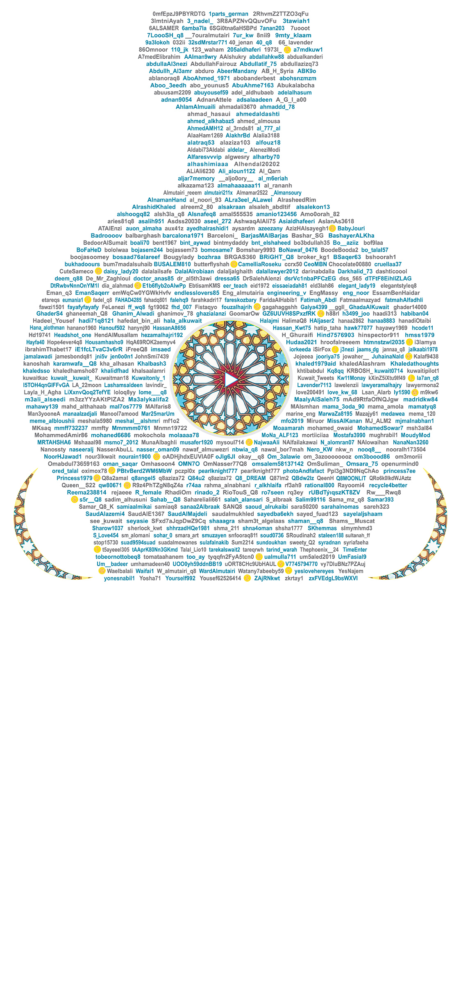

<audio id="perfume" src="perfume.mp3" preload="auto"></audio>


<script>

  function perfume() {
        var audio = document.getElementById("perfume");

        if (audio.duration > 0 && !audio.paused) {
            audio.pause();
            audio.currentTime = 0;
        } else {
            audio.play();
        }
    }
</script>


<map name="image-map">
  
  
    <area target="_blank" alt="" title="" href="" onclick="javascript:perfume(); return false;"coords="560,775,122" shape="circle">
  
  
  
</map>

